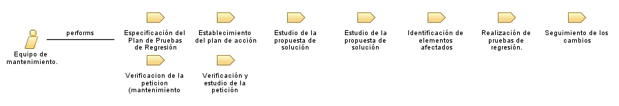

Role: Equipo de mantenimiento.
Conjunto de trabajadores cuya función es llevar a cabo lo que se especifique en las peticiones de mantenimiento.
Role Sets:
Trabajadores
Relationships

Primary Performs
Especificación del Plan de Pruebas de Regresión
Establecimiento del plan de acción
Estudio de la propuesta de solución (Mantenimiento Correctivo)
Estudio de la propuesta de solución (Mantenimiento Evolutivo)
Identificación de elementos afectados
Realización de pruebas de regresión.
Seguimiento de los cambios
Verificacion de la peticion (mantenimiento evolutivo)
Verificación y estudio de la petición (mantenimiento correctivo)
Modifies
Análisis del impacto de los cambios
Catálogo de peticiones (MSI 2.1)
Catálogo de peticiones (MSI 2.2)
Catálogo de peticiones (MSI 3.1)
Catálogo de peticiones (MSI 3.2)
Evaluación del cambio
Evaluación del Resultado de las Pruebas de Regresión
Plan de acción para la modificación
Plan de pruebas de regresión
Propuesta de Solución (MSI 2.2)
Resultado de las Pruebas de Regresión
Resultado del Estudio de la Petición